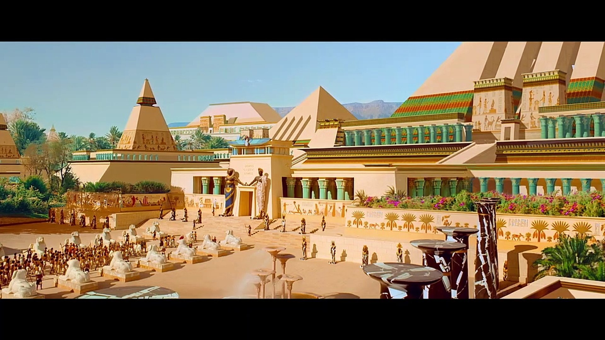

Des effets spéciaux qui permettent de casser les règles
Il y a des règles tacites qui ont évolué selon les âges dans le cinéma. La caméra est un objet à part entière avec un position et une présence dans l'espace. Elle ne peut pas a priori traverser des murs, des personnes, changer en un plan de temps ou d'espace. Elle ne doit pas non plus être violentée ou salie, passer dans des espaces ultra fins et ainsi échapper à son cadreur. Mais les effets spéciaux peuvent permettre ce type de plans qui perturbent le regard du spectateur qui inconsciemment voit la caméra, et parfois son équipe. Ils permettent également des plans séquences très longs et techniques, et augmenter leur impact par des effets spéciaux marquants au milieu d'un plan déjà très long. Gaspar Noé explore ces effets discrets mais dérangeants dans Enter The Void où nous traversons toute la ville pour passer d'une scène à une autre, dans Irréversible lorsque la caméra traverse une vitre fermée pour entrer dans la voiture avant d'en ressortir de nouveau, ou dans Climax lorsqu'au milieu d'un plan d'environ 10 minutes, une femme s'automutile de manière très réaliste. L'effet étant imperceptible, l'oeil du spectateur est dérangé et encore plus impacté. Un cinéaste ayant également exploré ces effets est Robert Zemeckis, en particulier dans Contact où la caméra suit une jeune fille courir jusqu'à son armoire à pharmacie et finir en élargissant le cadre, comme si nous regardions un reflet depuis le début, malgré l'impossibilité de l'idée. Le miroir est en fait un fond vert dans lequel est incrusté le plan de la jeune fille qui court. Dans What Lies Beneath, il fait traverser la caméra à travers le sol et filme les deux personnages vu de sous le parquet. Le parquet a été incrusté ensuite sur la vitre sur laquelle jouaient les acteurs. Il fait également balader sa caméra dans la voiture, sous la voiture, en pleine action, des plans impossibles à faire pour une caméra.
La restauration d'anciens films
Ce que permettent les effets spéciaux numériques, dont les nouvelles technologies et les logiciels très puissants, sont également de revenir sur des anciens films qui ont été tournés. N'ayant aucune validation éthique, le mieux que l'on puisse faire est de restaurer les parties abîmées, ou améliorer la qualité des anciens films, par exemple ceux tournés en pellicule donc de qualité "continue" qui ont à l'époque été scannés en numérique dans une qualité HD ou 2k, et les remettre au goût du jour en 4k. C'est le cas d'Astérix et Obélix Mission Cléopâtre, ressorti en fin 2023 en 4k. La plupart des plans ont simplement eu besoin d'un rescan en 4k, mais les plans truqués à même le numérique, donc déjà scannés, ont eu besoin d'IA pour augmenter la qualité artificiellement.
Contact, Robert Zemeckis, 1997.
What Lies Beneath, Robert Zemeckis, 2000.
Plan restauré en 4k par IA d'Astérix et Obélix mission Cléopâtre
